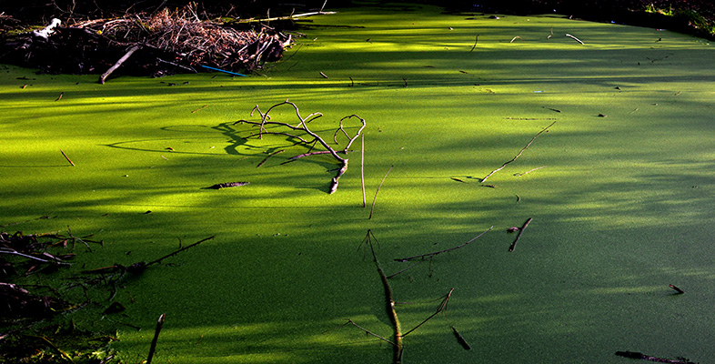
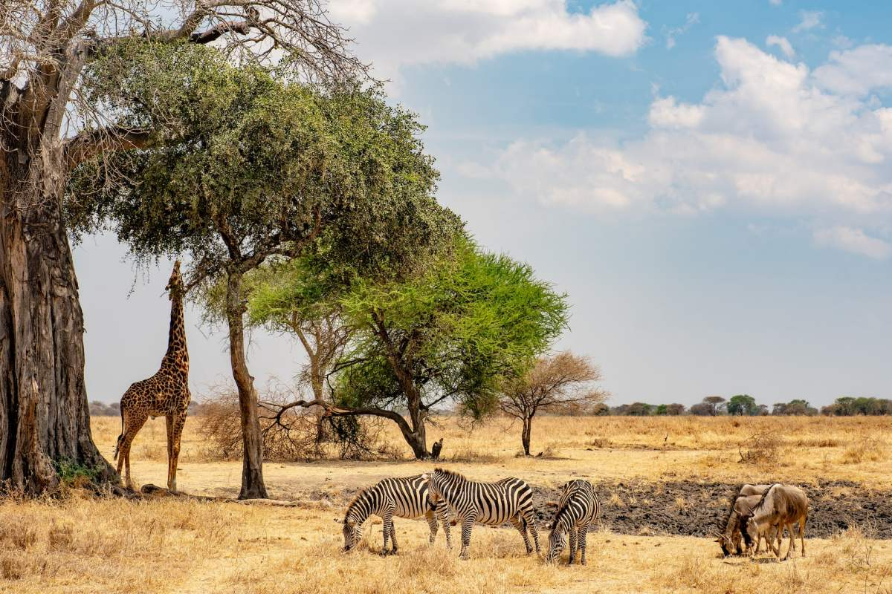

Respiratory Problems: Inhaling air pollutants can aggravate your airways, which can lead to chest pain, coughing, wheezing, asthma attacks, and shortness of breath. You run the danger of developing lung cancer, having a heart attack or stroke, and in the worst circumstances, dying too soon from exposure to air pollution. Lung health is at risk from air pollution, especially for: infants and young children, whose breathing is often faster than that of older children and adults; the elderly, who may breathe more quickly; those who are employed or spend time outside; and those with lung or heart illness.

Acid Rain: Sulfur dioxide and nitrogen oxides are emitted into the atmosphere, where they combine with water, oxygen, and other elements to create sulfuric and nitric acids. This leads to the formation of acid rain, typically with a pH level below 4.5. While natural factors like volcanic eruptions can contribute to acid rain, human activities, particularly the burning of fossil fuels in industries, oil refineries, electricity generation, and automobiles, are the primary culprits. In the United States, a significant portion of sulfur dioxide and nitrogen oxides emissions occurs, with the production of electricity from fossil fuels like coal being a major source of nitrogen oxide emissions.

Eutrophication: the process of accumulation of nutrients, including nitrogen, in water bodies, often results from air pollution. An excessive amount of nutrients can promote the growth of algae and other aquatic plants, which can deplete the oxygen in the water and kill aquatic life.
Reduced Visibility: Air pollution can create a white or brown haze that affects how far we can see. It also affects how well we are able to see the colors, forms, and textures of natural and historic vistas.Particulate matter and other pollutants can reduce visibility, creating safety hazards on roads and affecting the overall quality of life in urban areas.

Agriculture- Smog and acid rain, which alter the air and the soil that plants live in and reduce agricultural yields and harm plant roots and leaves, are other effects of increased air pollution. Crop yields are one of the most significant ways that air pollution and climate change impact agriculture.
Reducing Sunlight - The amount of sunlight that reaches the surface is diminished by high amounts of particulate pollution caused by all forms of burning, and the sky itself even changes in appearance. When there is less sunlight available for photosynthesis, crops produce less and forests grow more slowly.

Harming Forests - Air pollution weakens trees, making them more susceptible to severe harm from insects and disease. Some air pollutants may also have an indirect effect on the health of trees by changing ecosystem functions including nitrogen cycling and soil chemistry. Reduced tree vigor and growth are the results, which can eventually cause a tree to die.

Wildlife - Animals with a weakened immune system are more susceptible to illnesses and infectious diseases than animals with clean air. Just like humans, animals are susceptible to allergies, illnesses, and skin irritations of all types brought on by smog.
